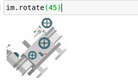

用于数据处理的Python工具(Numerizer,Faker,Missingno,emot,Arrow)¶
用于数据操作的Python模块--大多数数据科学家可能知道用于此目的的标准工具集。我们已经习惯于将pandas导入为pd，以至于此时不用键盘或鼠标就能完成。虽然我们常用来操作和处理数据的标准公平的工具当然是一套很好的工具包，但实际上在Pythonic数据科学生态系统中，还有很多模块可以让我们知道。这个生态系统非常庞大，在Python包索引（PIP）中，有超过30万个注册包。去吧，让你的朋友准备好PIP，因为你会想要添加这些令人兴奋的包来增强你的数据处理工作流程!
Numerizer¶
一个相当有趣的 Python 模块是一个称为Numerizer的小模块。数字化模块有一个非常简单的目的，即将字符串形式的数字转换为整数。有很多情况下，这可能是非常有用的，但我发现这个模块最有用的领域是最有可能的自然语言处理。话虽如此，我绝对可以看到这也适用于数据框内的一些字符串数据，由于某种原因，这些字符串数据是作为单词而不是数字存储的。我们都知道它是如何，数据可以令人难以置信的不可预知。幸运的是，广阔的Python工具，如Numerizer通常有我们在这方面覆盖！
安装: sudo pip install numerizer
1 2 3 4 5 6 7 | |
Faker¶
在我的数据科学生涯中，有很多情况需要构建原型或概念证明，但找不到任何基本数据。没有必要害怕，因为Faker模块在这里！Faker 模块可用于快速有效地生成各种假数据。我决定用它来生成一个新的Pandas Dataframe：
安装: sudo pip install faker
1 2 3 | |
请注意，我们必须初始化Faker()类。
1 2 3 4 | |
我想我认识一个叫凯瑟琳 · 邓恩的人， 我和她一起上高中， 所以这很现实。但不确定她是否有一个名为 cunningham.com 的网站。
Missingno¶
Missingno 是一个简单而令人敬畏的库，当涉及到丢失值时，它可以快速评估数据的健康状况。此包的独特之处在于，它提供了一个矩阵，可生动地可视化丢失的数据量。
安装: sudo pip install missingno
1 2 3 4 5 | |

emot¶
Emot 是一个 Python 模块，可以非常有效地从表情符号中实际获取真实数据。如今，随着表情符号的流行，这一点变得更加重要。我们可以利用这个模块进行情绪分析和一般自然语言处理。此模块将基本上将我们的表情符号文本更改为它们所做的事情的描述。然后，这将允许算法实际分析文本的这些部分并查找一致性。
安装: sudo pip install emot
1 2 3 4 5 6 7 | |
Pillow¶
Pillow是一个非常基本和易于使用的Python模块图像处理。
安装: sudo pip install pillow
1 2 3 | |
1 | |

Arrow¶
Python 有很多非常优秀的时间模块。例如，datetime（用讽刺来理解）当然还有Pandas datetime，我认为这是我最常使用的, 也是最著名的。Arrow 是一个更优秀的模块，为 Python 语言提供一些更好的日期时间功能。这个包的另一个很酷的功能是"人性化"功能，我实际上已经使用！请允许我解释。当我比今天年轻很多的时候，我的任务是在学校创建一个在线聊天应用程序，为此我使用了Django。我使用人性化的功能来改变我的计算机语言，而更少的人性化时代变成了简单的短语，我们实际上可能会在谈话中说。
安装: sudo pip install arrow
1 2 3 4 | |
我们甚至可以通过使用本地化参数来更改语言！
1 | |
凡本网注明"来源：XXX "的文/图/视频等稿件，本网转载出于传递更多信息之目的，并不意味着赞同其观点或证实其内容的真实性。如涉及作品内容、版权和其它问题，请与本网联系，我们将在第一时间删除内容！
作者: Emmett Boudreau
来源： https://towardsdatascience.com/handy-dandy-python-modules-for-data-processing-3a85d6806d39